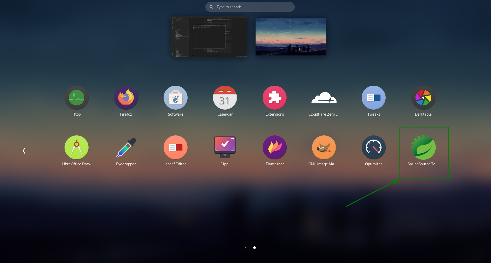

Linux
Linux Environment Setup For Developer
Manual Installation
Install JDK
Go to this oracle page to download JDK8
Then use command below to extract the binary package and put it at folder that you want to use.
tar -xvf package-name.tar.gz
Then put these lines below to the end of file
export JAVA_HOME = /home/duc/solfwares/jdk1.8.0_333
export PATH = $PATH :$JAVA_HOME /bin
Use command below to check JDK installation
~$ java -version
java version "1.8.0_333"
Java( TM) SE Runtime Environment ( build 1 .8.0_333-b02)
Java HotSpot( TM) 64 -Bit Server VM ( build 25 .333-b02, mixed mode)
Install Maven
Download Maven at: https://maven.apache.org/download.cgi
Then extract the zip file at any folder that you want.
tar -xvf package-name.tar.gz
Then put these lines below to the end of file
export MAVEN_HOME = /home/duc/solfwares/apache-maven-3.8.6
export PATH = $PATH :$MAVEN_HOME /bin
~$ mvn -version
Apache Maven 3 .8.5 ( 3599d3414f046de2324203b78ddcf9b5e4388aa0)
Maven home: /home/duc/solfwares/apache-maven-3.8.5-bin/apache-maven-3.8.5
Java version: 1 .8.0_312, vendor: Private Build, runtime: /usr/lib/jvm/java-8-openjdk-amd64/jre
Default locale: en_US, platform encoding: UTF-8
OS name: "linux" , version: "5.13.0-37-generic" , arch: "amd64" , family: "unix"
Set Up Maven Setting.xml
Go to /home/<user>/.m2 , then past the file setting.xml there.
cp setting.xml /home/duc/.m2/setting.xml
Install Gradle
Download binary Zip file of Gradle at: https://gradle.org/install/
Then extract the zip file at any folder that you want.
tar -xvf package-name.tar.gz
Then put these lines below to the end of file
export GRADLE_HOME = /home/duc/solfwares/gradle-7.4.1-bin/gradle-7.4.1
export PATH = $PATH :$GRADLE_HOME /bin
Check Gradle installation
1
2
3
4
5
6
7
8
9
10
11
12
13
14 ~$ gradle -version
------------------------------------------------------------
Gradle 7 .4.1
------------------------------------------------------------
Build time: 2022 -03-09 15 :04:47 UTC
Revision: 36dc52588e09b4b72f2010bc07599e0ee0434e2e
Kotlin: 1 .5.31
Groovy: 3 .0.9
Ant: Apache Ant( TM) version 1 .10.11 compiled on July 10 2021
JVM: 1 .8.0_312 ( Private Build 25 .312-b07)
OS: Linux 5 .13.0-37-generic amd64
Install Git
Use command below to install Git:
~$ git --version
git version 2 .25.1
To avoid the specification of the username and password at every git push, use commands below
sudo git config credential.helper store
# this command is used when you have many repos and you want to input username/password one time
sudo git config --global credential.helper store
Install Nodejs And Npm
User the command below to enable NodeSource repository.
curl -sL https://deb.nodesource.com/setup_16.x | sudo -E bash -
User command below to install nodejs
sudo apt-get install -y nodejs
Check nodejs and npm installations
~$ node --version
v16.15.1
~$ npm --version
8.11.0
There is also another way to install Nodejs.
Go to the this link to download nodejs Linux Binaries.
User the command below to extract the tar file at any folder
tar -xvf <nodejs-binary-tar-file>
Then put these lines at the end of file.
export NODEJS_HOME = /home/duc/solfwares/nodejs
export PATH = $PATH :$NODEJS_HOME /bin
Check nodejs and npm installations
~$ node --version
v16.15.1
~$ npm --version
8.11.0
Install Angular
User command below to install Angular with lastest version
sudo npm install -g @angular/cli
Check angular installation
1
2
3
4
5
6
7
8
9
10
11
12
13
14
15
16
17
18
19
20
21
22
23
24 $ ng version
_ _ ____ _ ___
/ \ _ __ __ _ _ _| | __ _ _ __ / ___| | | _ _|
/ △ \ | '_ \ / _` | | | | |/ _` | ' __| | | | | | |
/ ___ \| | | | ( _| | | _| | | ( _| | | | | ___| | ___ | |
/_/ \_\_ | | _| \_ _, | \_ _,_| _| \_ _,_| _| \_ ___| _____| ___|
| ___/
Angular CLI: 13 .3.0
Node: 16 .14.2
Package Manager: npm 8 .5.0
OS: linux x64
Angular:
...
Package Version
------------------------------------------------------
@angular-devkit/architect 0 .1303.0 ( cli-only)
@angular-devkit/core 13 .3.0 ( cli-only)
@angular-devkit/schematics 13 .3.0 ( cli-only)
@schematics/angular 13 .3.0 ( cli-only)
Install Docker - Docker Compose
Go to this page and following the instruction.
Install Mysql WorkBench
sudo dpkg -i mysql-workbench-community_8.0.28-1ubuntu20.04_amd64.deb
If there are any error happened. Then continue to run command below for fixing
sudo apt --fix-broken install
Then go to Application to check installation or use command mysql-workbench to start application.
Install Dbeaver
Go to this page to download the .deb file. Ex: the file name after downloaded will be dbeaver-ce_22.0.1_amd64.deb.
Then use the command below to install the Dbeaver.
sudo dpkg -i dbeaver-ce_22.0.1_amd64.deb
Install SoapUI
Go to this page to download ## SoapUI Open Source.
Then use command below to be able to execute the sh file.
- Then follow the GUI installation and finish.
Install Grunt
To install Grunt you can read the instruction right here .
So firstly, you need to run the command below to install the grunt-cli
Then we need to run the command below to install grunt dependencies
Go to this website and download the binary package.
Then extract it at any folder that you want.
Then use the command below to create a desktop file for Spring Tool Suite application.
sudo gedit /usr/share/applications/STS.desktop
Then in the STS.desktop file add the configuration below.
[ Desktop Entry]
Name = SpringSource Tool Suite
Comment = SpringSource Tool Suite
Exec = /home/{ PATH_TO_STS_EXTRACTED_FOLDER} /SpringToolSuite4
Icon = /home/{ PATH_TO_STS_EXTRACTED_FOLDER} /icon.xpm
StartupNotify = true
Terminal = false
Type = Application
Categories = Development; IDE; Java;
Then save and reboot your computer.
Then you should see the STS application in the applications as below.

Install Hugo
MiniKube
curl -LO https://storage.googleapis.com/minikube/releases/latest/minikube-linux-amd64
sudo install minikube-linux-amd64 /usr/local/bin/minikube
Kubectl
Install using native package management.
Update the apt package index and install packages needed to use the Kubernetes apt repository:
sudo apt-get update
# apt-transport-https may be a dummy package; if so, you can skip that package
sudo apt-get install -y apt-transport-https ca-certificates curl
Download the public signing key for the Kubernetes package repositories. The same signing key is used for all repositories so you can disregard the version in the URL:
curl -fsSL https://pkgs.k8s.io/core:/stable:/v1.28/deb/Release.key | sudo gpg --dearmor -o /etc/apt/keyrings/kubernetes-apt-keyring.gpg
Add the appropriate Kubernetes apt repository. If you want to use Kubernetes version different than v1.28, replace v1.28 with the desired minor version in the command below:
# This overwrites any existing configuration in /etc/apt/sources.list.d/kubernetes.list
echo 'deb [signed-by=/etc/apt/keyrings/kubernetes-apt-keyring.gpg] https://pkgs.k8s.io/core:/stable:/v1.28/deb/ /' | sudo tee /etc/apt/sources.list.d/kubernetes.list
Update apt package index, then install kubectl:
sudo apt-get update
sudo apt-get install -y kubectl
Helm
To install Helm let's run commands as below.
curl https://baltocdn.com/helm/signing.asc | gpg --dearmor | sudo tee /usr/share/keyrings/helm.gpg > /dev/null
sudo apt-get install apt-transport-https --yes
echo "deb [arch= $( dpkg --print-architecture) signed-by=/usr/share/keyrings/helm.gpg] https://baltocdn.com/helm/stable/debian/ all main" | sudo tee /etc/apt/sources.list.d/helm-stable-debian.list
sudo apt-get update
sudo apt-get install helm
K6
For Debian Ubuntu, please run commands below.
sudo gpg -k
sudo gpg --no-default-keyring --keyring /usr/share/keyrings/k6-archive-keyring.gpg --keyserver hkp://keyserver.ubuntu.com:80 --recv-keys C5AD17C747E3415A3642D57D77C6C491D6AC1D69
echo "deb [signed-by=/usr/share/keyrings/k6-archive-keyring.gpg] https://dl.k6.io/deb stable main" | sudo tee /etc/apt/sources.list.d/k6.list
sudo apt-get update
sudo apt-get install k6
After that, let's open terminal and type k6 we should see the result below.
1
2
3
4
5
6
7
8
9
10
11
12
13
14
15
16
17
18
19
20
21
22
23
24
25
26
27
28
29
30
31
32
33
34
35
36
37 duc@duc-MS-7E01:~$ k6
/\ | ‾‾| /‾‾/ /‾‾/
/\ / \ | | / / / /
/ \/ \ | ( / ‾‾\
/ \ | | \ \ | ( ‾) |
/ __________ \ | __| \_ _\ \_ ____/ .io
Usage:
k6 [ command]
Available Commands:
archive Create an archive
cloud Run a test on the cloud
completion Generate the autocompletion script for the specified shell
help Help about any command
inspect Inspect a script or archive
login Authenticate with a service
pause Pause a running test
resume Resume a paused test
run Start a test
scale Scale a running test
stats Show test metrics
status Show test status
version Show application version
Flags:
-a, --address string address for the REST API server ( default "localhost:6565" )
-c, --config string JSON config file ( default "/home/duc/.config/loadimpact/k6/config.json" )
-h, --help help for k6
--log-format string log output format
--log-output string change the output for k6 logs, possible values are stderr,stdout,none,loki[= host:port] ,file[= ./path.fileformat] ( default "stderr" )
--no-color disable colored output
-q, --quiet disable progress updates
-v, --verbose enable verbose logging
Use "k6 [command] --help" for more information about a command.
asdf is a tool version manager. All tool version definitions are contained within one file (.tool-versions) which you can check in to your project's Git repository to share with your team, ensuring everyone is using the exact same versions of tools.
The old way of working required multiple CLI version managers, each with their distinct API, configurations files and implementation (e.g. $PATH manipulation, shims, environment variables, etc...). asdf provides a single interface and configuration file to simplify development workflows, and can be extended to all tools and runtimes via a simple plugin interface.
More information
To Install asdf firstly, let's install curl and git
sudo apt install curl git
Then clone this official repository below
git clone https://github.com/asdf-vm/asdf.git ~/.asdf --branch v0.12.0
Then add following lines below into ~/.bashrc
~/.bashrc # other codes........
. " $HOME /.asdf/asdf.sh"
. " $HOME /.asdf/completions/asdf.bash"
ASDF Plugins
We can view many plugins for asdf in this repository . In this part I just put some common plugins that we usually use.
Add A Plugin
Add plugins via their Git URL:
asdf plugin add <name> <git-url>
# asdf plugin add elm https://github.com/vic/asdf-elm
List Installed Plugins
asdf plugin list
# asdf plugin list
# java
# nodejs
asdf plugin list --urls
# asdf plugin list
# java https://github.com/halcyon/asdf-java.git
# nodejs https://github.com/asdf-vm/asdf-nodejs.git
List All Available Plugins
Update Plugins
asdf plugin update <name>
# asdf plugin update erlang
Remove Plugin
asdf plugin remove <name>
# asdf plugin remove erlang
ASDF Versions
List All Available Versions
asdf list all <name>
# asdf list all erlang
Install A Version
asdf install <name> <version>
# asdf install erlang 17.3
List Installed Versions
asdf list <name>
# asdf list erlang
Set Current Version
asdf global <name> <version>
View Current Version
asdf current
# asdf current
# erlang 17.3 /Users/kim/.tool-versions
# nodejs 6.11.5 /Users/kim/cool-node-project/.tool-versions
asdf current <name>
# asdf current erlang
# erlang 17.3 /Users/kim/.tool-versions
Uninstall Version
asdf uninstall <name> <version>
# asdf uninstall erlang 17.3
ASDF With Java
Add Java Plugin
asdf plugin add java https://github.com/halcyon/asdf-java.git
Find All Java Versions
Install Specific Java Versions
asdf install java adoptopenjdk-8.0.382+5
asdf install java adoptopenjdk-11.0.20+8
asdf install java adoptopenjdk-17.0.8+7
List Installed Java Versions
Set Desire Java Version
asdf global java adoptopenjdk-8.0.382+5
Uninstall A Java Version
asdf uninstall java adoptopenjdk-11.0.20+8
ASDF With NodeJs
Add NodeJs Plugin
asdf plugin add nodejs https://github.com/asdf-vm/asdf-nodejs.git
Find All NodeJs Versions
Install Specific NodeJs Versions
asdf install nodejs 18 .16.1
asdf install nodejs 20 .5.0
List Installed NodeJs Versions
Set NodeJs Version
For example, NodeJs 18.16.1
asdf global nodejs 18 .16.1
Uninstall A NodeJs Version
For example, NodeJs 20.5.0
asdf uninstall nodejs 20 .5.0
ASDF With Maven
Add Maven Plugin
asdf plugin add maven https://github.com/halcyon/asdf-maven.git
Find All Maven Versions
Install Specific Maven Versions
List Installed Maven Versions
Set Maven Version
Uninstall A Maven Version
asdf uninstall maven 3 .6.3
KeePass2
KeePass2 is a tool for storing credentials with a master password, credentials will be stored in a file which is encrypted and we can't decrypt this file to get credentials without master password, so it is also safe for us to transfer this file over the internet.To install the KeePass2, please run following commands below.
sudo add-apt-repository ppa:ubuntuhandbook1/keepass2
sudo apt install keepass2
To remove KeePass2 out of your computer, run commands below
sudo apt remove --autoremove keepass2
sudo add-apt-repository --remove ppa:ubuntuhandbook1/keepass2